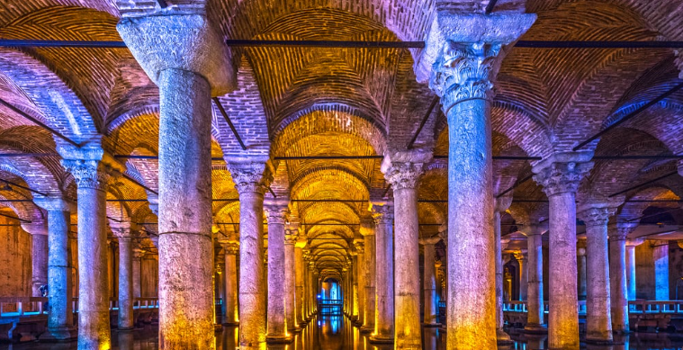
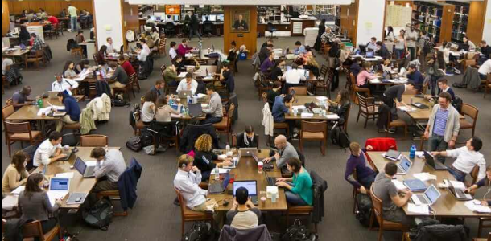
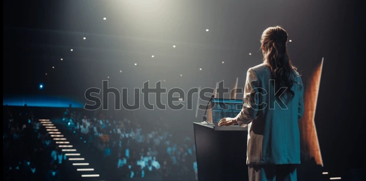
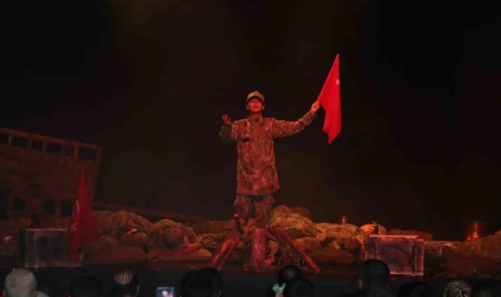
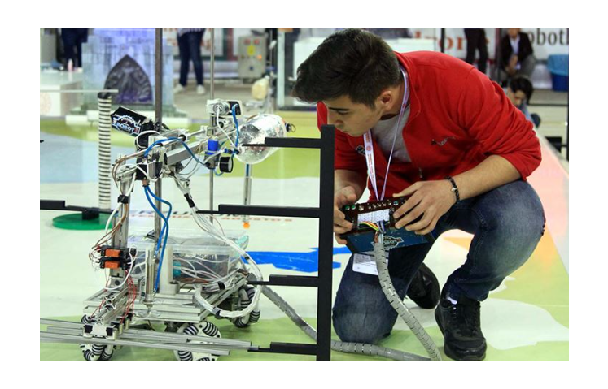

Gençlik Merkezi Faaliyetleri
Küçükçekmece Gençlik Merkezi'nde bilimden teknolojiye, kamplardan yarışmalara kadar geniş bir yelpazede geleceğe hazırlanın.

Bilim Kültür Gezileri
- Cumhuriyet Müzesi / İstanbul Sanat Müzesi
- Yerebatan Sarnıcı / İstanbul Tasarım Müzesi
- Atatürk Müzesi / Doğa Bilim Müzesi
- Dijital Sanatlar Müzesi
Gençlik Kampları
- Doğa Yürüyüşleri
- Atölye Çalışmaları
- Doğada Yaşam Becerileri
- Çeşitli Aktiviteler

Çok Amaçlı Ders Çalışma Salonu
- Wifi Hizmeti
- Etüt Saati
- Serbest Ders Çalışma Saatleri

Seminer ve Söyleşiler
- Mesleki Tanıtım / Bilim ve Teknoloji
- Kişisel Gelişim / Edebiyat ve Felsefe
- Güncel Gelişmeler / Gençlik Söyleşileri
Öğrenci Kulüpleri
- Bilim ve Teknoloji
- Dijital Ürün Geliştirme
- Fotoğrafçılık / Çevre

Sahne Programları
- 29 Ekim Cumhuriyet Bayramı
- 18 Mart Çanakkale Zaferi
- 19 Mayıs Gençlik ve Spor Bayramı
Genç Cafe
- İkramlar
- Kulüp Çalışmaları
- Serbest Oyun Alanları

Ulusal ve Uluslararası Yarışmalar
- Robot Turnuvaları / Teknofest
- Tübitak / İnovasyon Yarışmaları
- Akıl ve Zeka Oyunları